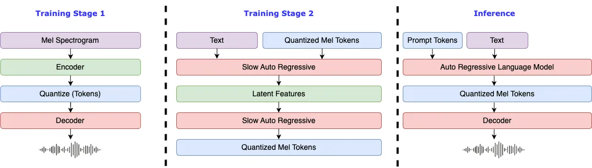

介绍


警告
我们不对代码库的任何非法使用承担任何责任. 请参阅您当地关于 DMCA (数字千年法案) 和其他相关法律法规.
此代码库与所有模型根据 CC-BY-NC-SA-4.0 许可证发布.

要求
- GPU 内存: 4GB (用于推理), 8GB (用于微调)
- 系统: Linux, Windows
Windows 配置
注意
我们强烈建议非Windows专业用户使用GUI运行该项目。GUI在这里.
Windows 专业用户可以考虑 WSL2 或 docker 来运行代码库。
# 创建一个 python 3.10 虚拟环境, 你也可以用 virtualenv
conda create -n fish-speech python=3.10
conda activate fish-speech
# 安装 pytorch
pip3 install torch==2.4.1 torchvision==0.19.1 torchaudio==2.4.1 --index-url https://download.pytorch.org/whl/cu121
# 安装 fish-speech
pip3 install -e .
# (开启编译加速) 安装 triton-windows
pip install https://github.com/AnyaCoder/fish-speech/releases/download/v0.1.0/triton_windows-0.1.0-py3-none-any.whl
Linux 配置
有关详细信息，请参见 pyproject.toml。
# 创建一个 python 3.10 虚拟环境, 你也可以用 virtualenv
conda create -n fish-speech python=3.10
conda activate fish-speech
# 安装 pytorch
pip3 install torch==2.4.1 torchvision==0.19.1 torchaudio==2.4.1
# (Ubuntu / Debian 用户) 安装 sox + ffmpeg
apt install libsox-dev ffmpeg
# (Ubuntu / Debian 用户) 安装 pyaudio
apt install build-essential \
cmake \
libasound-dev \
portaudio19-dev \
libportaudio2 \
libportaudiocpp0
# 安装 fish-speech
pip3 install -e .[stable]
macos 配置
如果您想在 MPS 上进行推理，请添加 --device mps 标志。
有关推理速度的比较，请参考 此 PR。
警告
compile 选项在 Apple Silicon 设备上尚未正式支持，因此推理速度没有提升的保证。
# create a python 3.10 virtual environment, you can also use virtualenv
conda create -n fish-speech python=3.10
conda activate fish-speech
# install pytorch
pip install torch==2.4.1 torchvision==0.19.1 torchaudio==2.4.1
# install fish-speech
pip install -e .[stable]
Docker 配置
-
安装 NVIDIA Container Toolkit：
Docker 如果想使用 GPU 进行模型训练和推理，需要安装 NVIDIA Container Toolkit ：
对于 Ubuntu 用户：
# 添加远程仓库 curl -fsSL https://nvidia.github.io/libnvidia-container/gpgkey | sudo gpg --dearmor -o /usr/share/keyrings/nvidia-container-toolkit-keyring.gpg \ && curl -s -L https://nvidia.github.io/libnvidia-container/stable/deb/nvidia-container-toolkit.list | \ sed 's#deb https://#deb [signed-by=/usr/share/keyrings/nvidia-container-toolkit-keyring.gpg] https://#g' | \ sudo tee /etc/apt/sources.list.d/nvidia-container-toolkit.list # 安装 nvidia-container-toolkit sudo apt-get update sudo apt-get install -y nvidia-container-toolkit # 重启 Docker 服务 sudo systemctl restart docker对于使用其他 Linux 发行版的用户，安装指南请参考：NVIDIA Container Toolkit Install-guide。
注：对于中国大陆的用户，您可能需要使用代理来完成相关工具的安装。
-
拉取并运行 fish-speech 镜像
-
下载模型依赖
确保您在 docker 容器内的终端，然后再从我们的 huggingface 仓库下载所需的
vqgan和llama模型。对于中国大陆用户，可以通过镜像站下载。
-
配置环境变量，访问 WebUI
在 docker 容器内的终端，输入
export GRADIO_SERVER_NAME="0.0.0.0"，从而让外部可以访问 docker 内的 gradio 服务。 接着在 docker 容器内的终端，输入python tools/run_webui.py即可开启 WebUI 服务。如果是 WSL 或者是 MacOS ，访问 http://localhost:7860 即可打开 WebUI 界面。
如果是部署在服务器上，更换 localhost 为您的服务器 ip 即可。
更新日志
- 2024/12/03: 更新了 Fish-Speech 到 1.5，增加更多支持语言，在开源领域属于SOTA.
- 2024/09/10: 更新了 Fish-Speech 到 1.4, 增加了数据集大小， quantizer n_groups 4 -> 8.
- 2024/07/02: 更新了 Fish-Speech 到 1.2 版本，移除 VITS Decoder，同时极大幅度提升 zero-shot 能力.
- 2024/05/10: 更新了 Fish-Speech 到 1.1 版本，引入了 VITS Decoder 来降低口胡和提高音色相似度.
- 2024/04/22: 完成了 Fish-Speech 1.0 版本, 大幅修改了 VQGAN 和 LLAMA 模型.
- 2023/12/28: 添加了
lora微调支持. - 2023/12/27: 添加了
gradient checkpointing,causual sampling和flash-attn支持. - 2023/12/19: 更新了 Webui 和 HTTP API.
- 2023/12/18: 更新了微调文档和相关例子.
- 2023/12/17: 更新了
text2semantic模型, 支持无音素模式. - 2023/12/13: 测试版发布, 包含 VQGAN 模型和一个基于 LLAMA 的语言模型 (只支持音素).